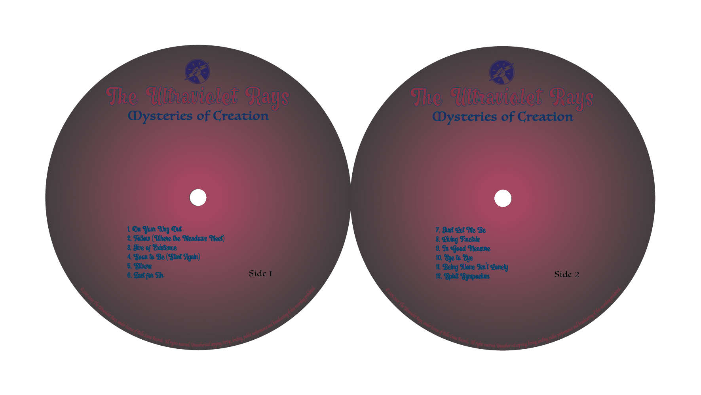
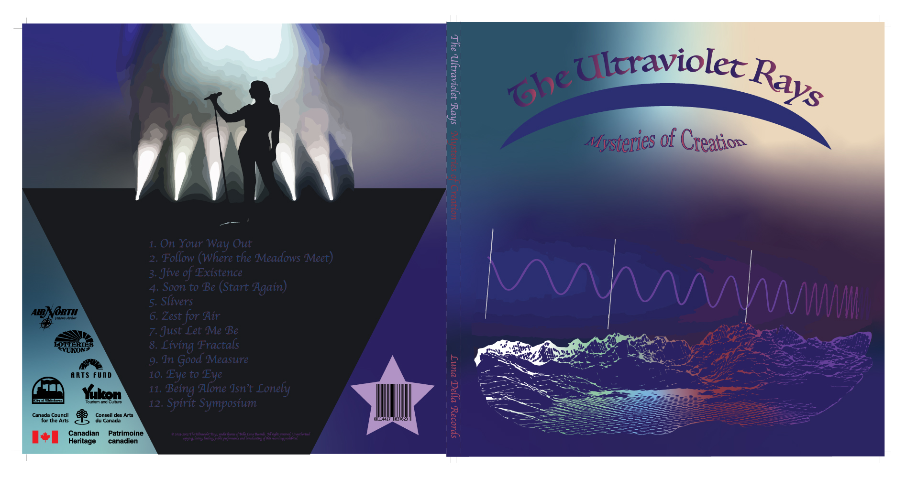
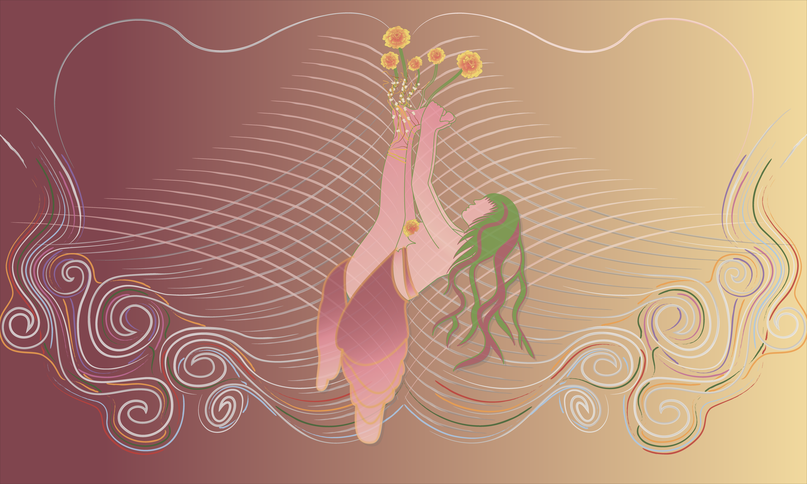

I started learning Illustrator in 2021 at the YukonU. While it took some of my classmates a while to learn how to use the tools, I took very naturally to them. By maybe the third assignment we had to do on Illustrator, I was already deciding to challenge myself.
In this particular project, we were asked to create a Day of the Dead style sugar skull, with specific instructions to show our ability to use important tools. Our instructor only expected us to make our skulls in 2D, but as you can see below, I tried challenging myself to do a 3D effect. Had I known how to do gradients back then, I would have been able to enhance this effect even more.

Record Assignment - 03/24/2021
The above and below images were an assignment presented to us, again with a specific amount of requirements. As you can see, at this point on my digital art journey I was really getting into the gradient work. To this day, gradients are one of my single most favourite tools to play with on Illustrator.

Bob Ross Tlingit Baddie - 2023
This piece was made for one of my best friends, Guná Jensen, who is a well-known Indigenous painter and graphic designer.

I Don't Know Anymore - Completed in August 2026
Reassign others’ opinions
To a separate entity from me.
Redraw lines in the ground,
Self-preservation once washed over.
Readjust pointed fingers
To CO2 of combined stress.
Remember to exhale dense air,
Formerly tainting my breath with its smell.
For I’m not to carry heavy lungs
Without spirit-chosen accountability.
In no form am I sole proprietor
To dead oxygen once shared.
I am not groundskeeper
For burdens of others
That once were buried
Within me.
One by one,
Uncover the blame,
Once seeded deep within;
Rake all thick grounds
To the roots I found
Hidden under my skin.
Dig out weeds
From the soles of my feet
To let my garden regrow;
Optimize the soil
& renew being loyal
To seeds I’d like to sow.
Is this self-healing?
Before starting from scratch,
I’d really like to know.
So much can be said
From old pieces, soon dead,
When in the depths of limbo.
May 23 2024
An Ode To Someone - January 2023
This one was created during a tough breakup in my life. The ripples on the water are made entirely from binary code, to represent the person I was in a relationship with and their love of technology. My intention with this one was to hide meaning in the tiniest of details, and I would love to see this piece blown up big on a canvas someday.
About the Artist
I’m an artist in many mediums, with a strong focus on expanding my work digitally. My paintings and poetry are
collections from throughout my life, and my bronze work was made during a semester at the Kootenay Studio of
Arts, back in 2018.
In most of my art, I aim for detailed intention. Each symbol, shape, and word often tells a personal story,
which I leave open for interpretation. I believe that expressing my life story through cryptic and abstract
means can become cathartic for others in their own life, by allowing them to relate to specific phrases and
symbols in my work.